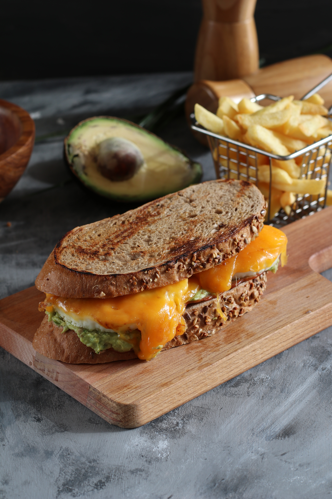

Recipe originally from AllRecipes
Grilled Cheese

Photo taken by Ahmed Rabea. Used under the Pexels license.
Description
A dish consisting of crispy bread and melted cheese.
Ingredients
- 1 tbsp real mayonnaise
- 2 slices crusty Italian bread
- 2 (1 ounce) slices white Cheddar cheese
Steps
- Spread one slice of bread with real mayonnaise. Place bread Mayonnaise-side-down into hot skillet; add cheese.
- Spread other slice of bread with Mayonnaise and place Mayonnaise-side-up on top of cheese.
- Cook until lightly browned on one side. Flip over and cook until cheese is melted.